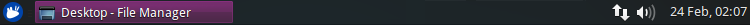

On the desktop you will see icons that can be used to access some of the most common places on your system. In addition, you will see a single, multipurpose, panel at the top of the screen.

On the far right, you will see indicators and a clock. Click the clock to see the monthly calendar.
Customize your panel by right-clicking it and selecting Panel » Panel Preferences. You can also add and remove panels using this dialog.